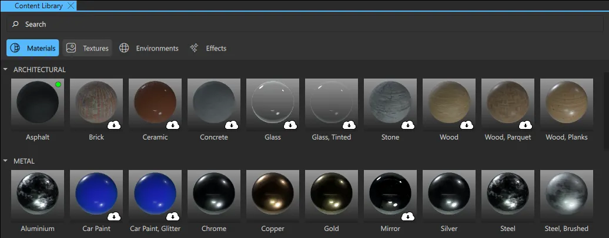

Content Library
Note: The Content Library view is included in the Qt Design Studio Enterprise license.
The Content Library view contains material, texture, effect, and environment bundles with assets that you can use in your project. When you have added an asset from Content Library, you can use it in your project.

Adding a Material to Your Project
You can use materials on 3D models.
To add a material from the Content Library view to your project, do one of the following:
- Select the
 next to the material in the Content Library view.
next to the material in the Content Library view. - Right-click the material in the Content Library view and select Add an instance to the project.
You can also add a material to a 3D model straight from the Content Library view. This also adds the material to the project.
To add a material to a 3D model, do one of the following:
- Drag the material from the Content Library view to a 3D model in the 3D or Navigator view.
- With a 3D model selected, right-click the material in the Content Library view and select Apply to selected.
Adding a Texture or Environment to Your Project
To add a texture or environment to your project, right-click the image in the Content Library view and select one of the options:
- Add image. This adds the image as an asset to your project. You can access the image from the Assets view.
- Add texture. This adds the image as a texture to your project. You can access the texture from the Textures section in the Material Browser view.
- Add light probe. This adds the image as a light probe for your scene, using the image to illuminate the scene and as a skybox. When you set an image as light probe, the following properties are set for Scene Environment:
- Background Mode is set to skybox.
- Light Probe > Image is set to the selected texture.
Adding an Effect to Your Project
To add an effect to your project, do one of the following:
- Right-click the effect in Content Library and select Add an Instance.
- From Content Library, drag the effect to the 3D or Navigator view.